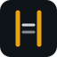

Option 1
Scaffold
Construction frame — corner brackets and a crossbar. Unfinished on purpose: the template builds with you.
Four metaphors for agent-project-bootstrap — scaffolding, guardrails, coaching, helpful gates. Same ink/amber/mist palette. Pick one to ship.
Construction frame — corner brackets and a crossbar. Unfinished on purpose: the template builds with you.
Guardrails — parallel lines with a clear lane. Stay on course without feeling fenced in.

Guidance / coaching — a simple tower with a light. /tour and /coach as the next step.
Rules that help — soft ring with a pass check. Gates and verify, not bureaucracy.